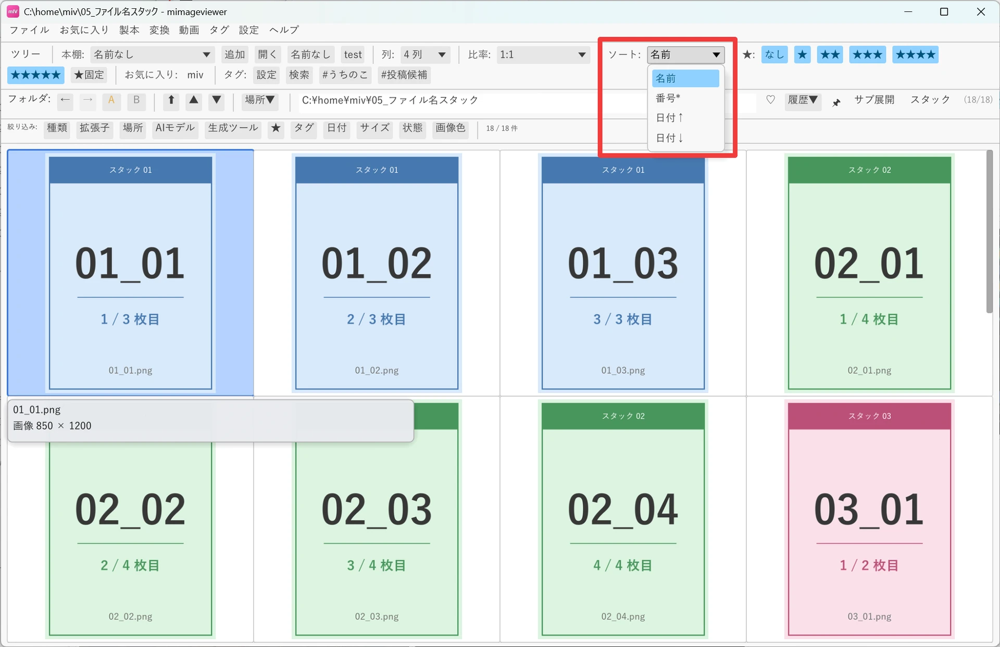
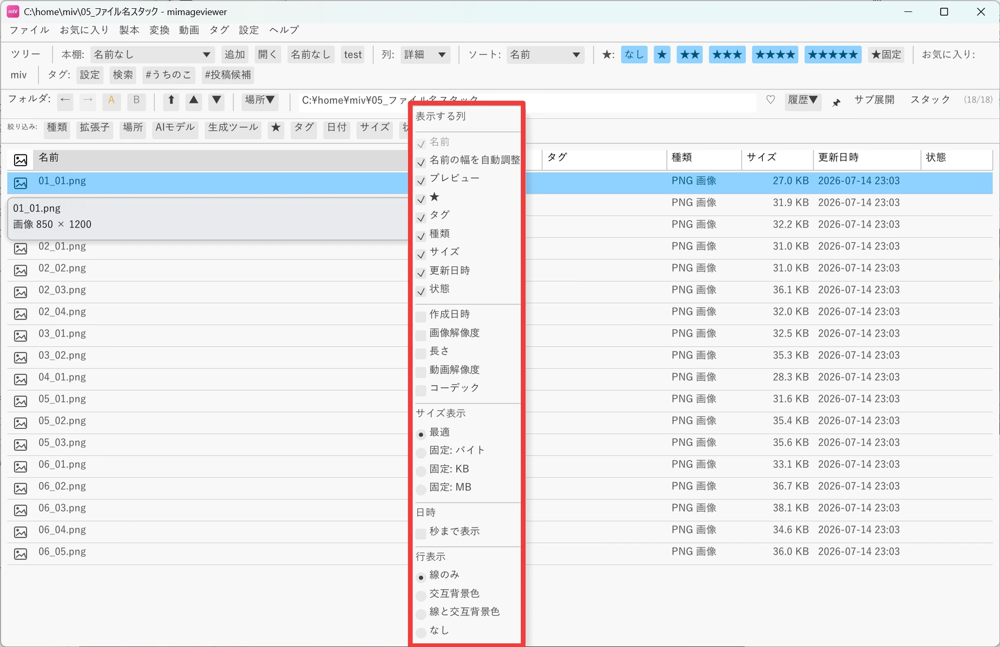
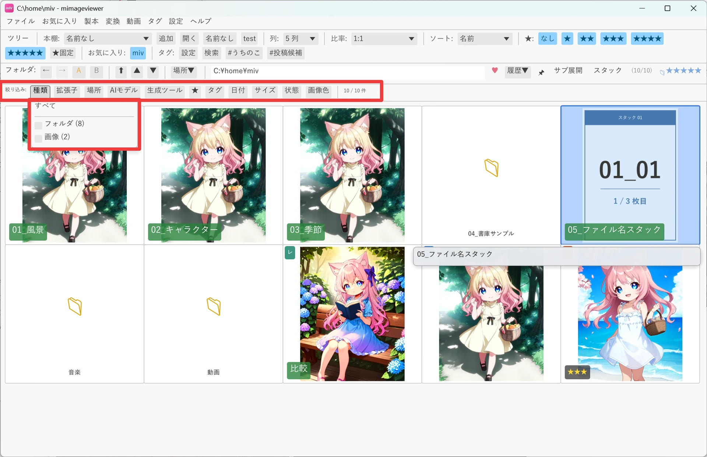
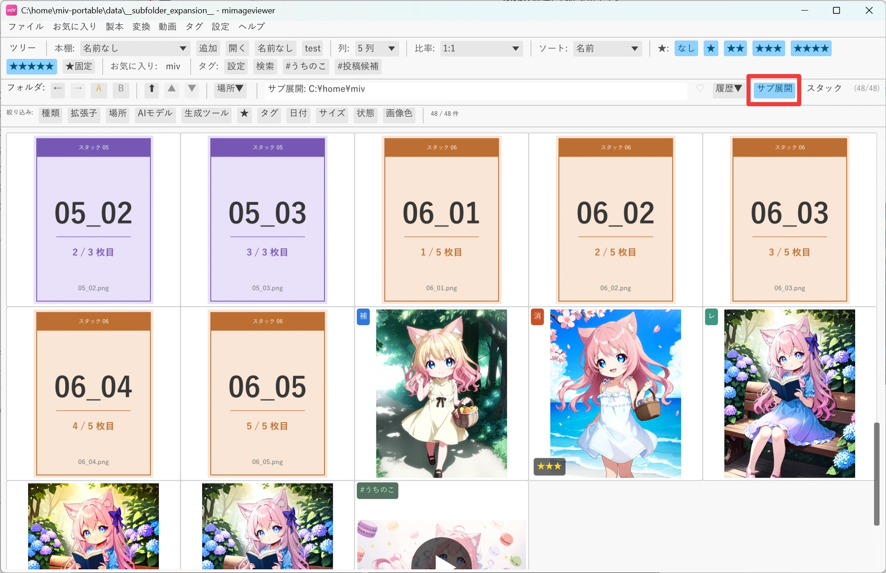
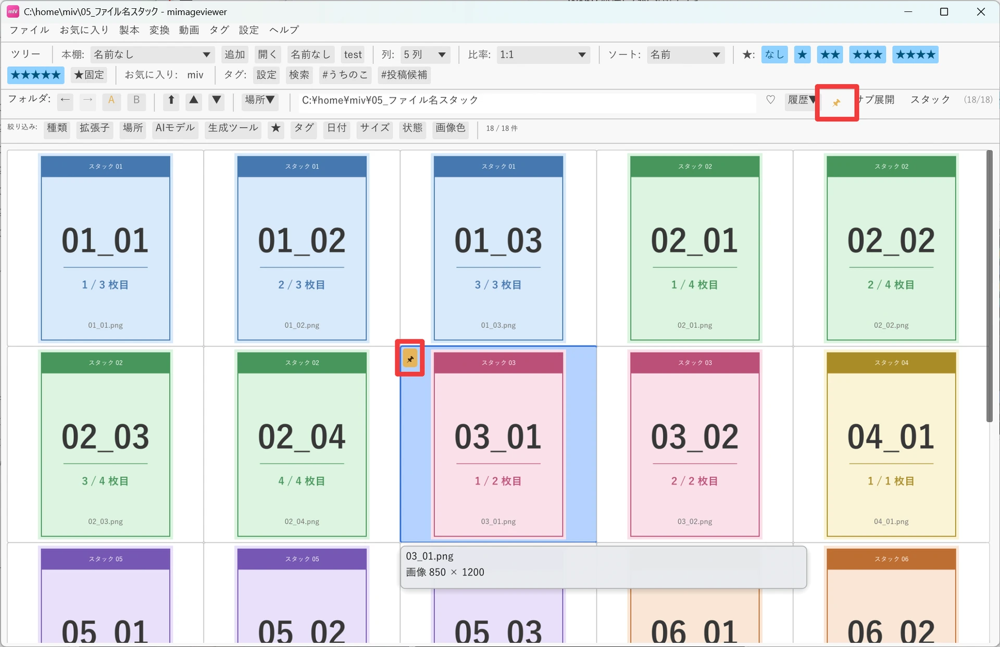

一覧を掘り下げる（並べ替え・絞り込み）
フォルダの中身が増えてくると、サムネイルをただ眺めるだけでは目的の 1 枚に辿り着きにくくなります。 ソート順・詳細表示の列・絞り込み条件・サブフォルダのまとめ表示・代表サムネイルの固定を使いこなすと、 同じ一覧画面でも見つけやすさが大きく変わります。
ソート順を変える
ツールバーのソートセクション、または設定メニューからソート順を変更できます。 選んだソート順は、フォルダ・ZIP・PDF・対応アーカイブの先頭ブロックと、画像・動画ファイルの後続ブロックの 両方に同じ順序で適用されます。
| ソート順 | 説明 |
|---|---|
| ファイル名順 | Windows の名前順に近い並び。数字列を数値として扱い、半角/全角・大文字/小文字・ひらがな/カタカナを強く分けずに並べます |
| 番号順（区切り無視） | 連番ファイル向けの自然順ソート。記号・空白などを無視して番号本体を比較します（1, 2, 9, 10, 11 の順） |
| 日付順（古い順） | 更新日時が古いファイルが先頭 |
| 日付順（新しい順） | 更新日時が新しいファイルが先頭 |

詳細表示では、列ヘッダをクリックしてもソートできます。クリックするたびに、その列で昇順 → 降順 → ソートなしを 切り替えます。ソートなしのときはツールバーのソート順が使われますが、ヘッダソート中はツールバーのソート操作は 無効になります。作成日時・画像解像度などの遅延ロード列は、読み込み完了後にソートできるようになります。
詳細表示で列をカスタマイズする
ツールバーの「列:」で「詳細」を選ぶか Alt+- で、サムネイル表示と詳細表示を切り替えられます。 詳細表示はサムネイルを表示せず、ファイル名・★・タグ・種類・サイズ・更新日時・状態を行で表示します。状態列には ページ個別補正の「補」、補正レイヤーの「レ」、消しゴムの「消」などが短縮表示されます。
列ヘッダを右クリックするとカラム表示メニューを開けます。名前列は常に表示され、★・タグ・種類・サイズ・更新日時・ 状態などの既定列は非表示にできます。作成日時・画像解像度・長さ・動画解像度・コーデックは追加できる列で、 必要な値をバックグラウンドで読み込みます（読み込み中は進捗行と「停止」「再開」ボタンが表示されます）。 同じメニューの「行表示」では、行区切り線のみ・交互背景色のみ・両方・なしを選べます。

| 操作 | 内容 |
|---|---|
| Alt+- | サムネイル表示と詳細表示を切り替え |
| 詳細表示で列ヘッダをクリック | その列で昇順 → 降順 → ソートなしを切り替え |
| 詳細表示で列ヘッダを右クリック | 表示する列・行の区切り方を選ぶカラム表示メニューを開く |
| 名前列の右端をドラッグ | 名前列を固定幅にし、横スクロールで他の列まで確認できるようにする |
| ヘッダを右クリック →「名前の幅を自動調整」 | 名前列をウィンドウ幅に合わせた自動伸縮に戻す |
スマートフィルタで絞り込む
ツールバーの下にある「絞り込み:」バーから、サムネイル表示・詳細表示のどちらでも同じ条件で絞り込めます。 このバーはツールバーの空き領域を右クリック、または「設定」→「ツールバー」で表示/非表示を切り替えられ、 表示するボタン自体は「絞り込み:」ラベルを右クリックして選びます。
- 種類 / 拡張子 / 場所：画像、動画、音声、ZIP、PDF や
.jpg/.png、元ファイルのフォルダで絞り込みます。場所の条件は今の表示だけに効き、フォルダや ZIP / PDF、仮想ビューを移動すると解除されます。 - ★ / タグ：既存のレーティング条件とアプリ内カタログの mIV タグで絞り込みます。タグは表示中の行から順にバックグラウンドで読み込まれます。
- 日付 / サイズ / 状態：更新日時の期間、ファイルサイズ、補・レ・消・隠・文・回、タグ有無・★有無で絞り込みます。
- 画像色：選んだ色を主要色として含む画像だけを絞り込みます（対象は画像のみ）。

サブフォルダを展開して表示
フォルダバーの「サブ展開」を押すと、現在の実フォルダ以下にある画像・動画をその時点のスナップショットとして 1 つのフラットな一覧にできます。走査中は件数とフォルダ数の進捗が表示され、「中止」でキャンセルできます。
通常フォルダ表示中にフォルダを Space または Ctrl+クリックでチェックしてから「サブ展開」を 押すと、チェックしたフォルダ以下だけをまとめて展開できます。チェックしたフォルダがない場合は、現在のフォルダ全体を 展開します。

代表サムネイルを固定する（ピン留め）
フォルダ・ZIP・PDF・変換済み RAR / 7z / LZH の代表サムネイルは通常、中のアイテムから自動で選ばれます。 自分で好きな 1 枚を選びたいときは「代表サムネ固定 (📌)」機能を使います。
| 設定方法 | 操作 |
|---|---|
| フォルダバーの 📌 ボタン | 左クリックで固定 / 解除のトグル、右クリックで固定を解除 |
| P キー | グリッドで選択中のアイテム、または画像フルスクリーンで表示中のアイテムを固定 / 解除 |
| 右クリックメニュー | 「📌 代表サムネに固定」（固定済みなら「📌 代表サムネ固定を解除」）を選択 |

- 固定できるもの：画像ファイル / 動画ファイル、サブフォルダ、入れ子になった ZIP / PDF ファイル、ZIP 内の画像エントリ（その ZIP を開いてから固定）、PDF のページ（その PDF を開いてから固定）。
- 固定できないもの：未変換の RAR / 7z / LZH（一度開いて ZIP に変換すると指定できます）、検索結果ビューの集約アイテム、空フォルダ。